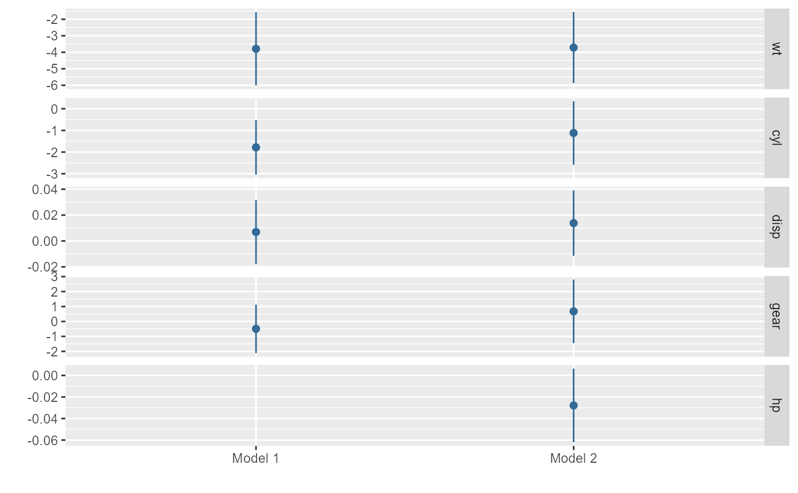
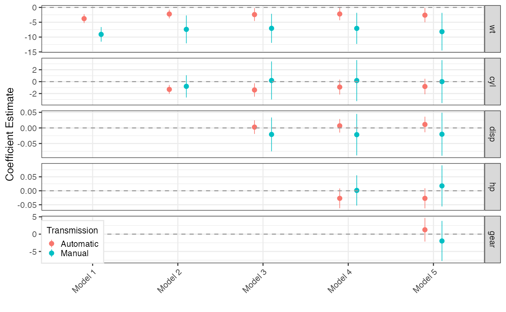

small_multiple is a function for plotting regression results of multiple models as a 'small multiple' plot
small_multiple( x, ci = 0.95, margins = FALSE, dodge_size = 0.4, show_intercept = FALSE, by_2sd = FALSE, dot_args = list(size = 0.3), ... )
| x | Either a tidy data frame including results from multiple models (see 'Details') or a list of model objects that can be tidied with |
|---|---|
| ci | A number indicating the level of confidence intervals; the default is .95. |
| margins | A logical value indicating whether presenting the average marginal effects of the estimates. See the Details for more information. |
| dodge_size | A number (typically between 0 and 0.3; the default is .06) indicating how much horizontal separation should appear between different submodels' coefficients when multiple submodels are graphed in a single plot. Lower values tend to look better when the number of models is small, while a higher value may be helpful when many submodels appear on the same plot. |
| show_intercept | A logical constant indicating whether the coefficient of the intercept term should be plotted |
| by_2sd | When x is model object or list of model objects, should the coefficients for predictors that are not binary be rescaled by twice the standard deviation of these variables in the dataset analyzed, per Gelman (2008)? Defaults to |
| dot_args | A list of arguments specifying the appearance of the dots representing mean estimates. For supported arguments, see |
| ... | Extra arguments to pass to |
The function returns a ggplot object.
small_multiple, following Kastellec and Leoni (2007), provides a compact means of representing numerous regression models in a single plot.
Tidy data frames to be plotted should include the variables term (names of predictors), estimate (corresponding estimates of coefficients or other quantities of interest), std.error (corresponding standard errors), and model (identifying the corresponding model).
In place of std.error one may substitute conf.low (the lower bounds of the confidence intervals of each estimate) and conf.high (the corresponding upper bounds).
Alternately, small_multiple accepts as input a list of model objects that can be tidied by tidy_parameters.
Optionally, more than one set of results can be clustered to facilitate comparison within each model; one example of when this may be desirable is to compare results across samples. In that case, the data frame should also include a variable submodel identifying the submodel of the results.
Kastellec, Jonathan P. and Leoni, Eduardo L. 2007. "Using Graphs Instead of Tables in Political Science." Perspectives on Politics, 5(4):755-771.
library(broomExtra) library(dplyr) # Generate a tidy data frame of regression results from six models m <- list() ordered_vars <- c("wt", "cyl", "disp", "hp", "gear", "am") m[[1]] <- lm(mpg ~ wt, data = mtcars) m123456_df <- m[[1]] %>% tidy %>% by_2sd(mtcars) %>% mutate(model = "Model 1") for (i in 2:6) { m[[i]] <- update(m[[i-1]], paste(". ~ . +", ordered_vars[i])) m123456_df <- rbind(m123456_df, m[[i]] %>% tidy %>% by_2sd(mtcars) %>% mutate(model = paste("Model", i))) } # Generate a 'small multiple' plot small_multiple(m123456_df)## Using submodels to compare results across different samples # Generate a tidy data frame of regression results from five models on # the mtcars data subset by transmission type (am) ordered_vars <- c("wt", "cyl", "disp", "hp", "gear") mod <- "mpg ~ wt" by_trans <- mtcars %>% group_by(am) %>% # group data by transmission do(tidy(lm(mod, data = .))) %>% # run model on each group rename(submodel = am) %>% # make submodel variable mutate(model = "Model 1") %>% # make model variable ungroup() for (i in 2:5) { mod <- paste(mod, "+", ordered_vars[i]) by_trans <- rbind(by_trans, mtcars %>% group_by(am) %>% do(tidy(lm(mod, data = .))) %>% rename(submodel = am) %>% mutate(model = paste("Model", i)) %>% ungroup()) } small_multiple(by_trans) + theme_bw() + ylab("Coefficient Estimate") + geom_hline(yintercept = 0, colour = "grey60", linetype = 2) + theme(axis.text.x = element_text(angle = 45, hjust = 1), legend.position=c(0, 0), legend.justification=c(0, 0), legend.title = element_text(size=9), legend.background = element_rect(color="gray90"), legend.spacing = unit(-3, "pt"), legend.key.size = unit(10, "pt")) + scale_colour_hue(name = "Transmission", breaks = c(0, 1), labels = c("Automatic", "Manual"))